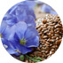

Tanggalin ang mga sintomas at sanhi ng cystitis sa bahay.
15
279
Ayon sa istatistika, 92% ng mga kababaihan ang nakaranas ng cystitis nang isang beses sa kanilang buhay, 67% ang nagdurusa mula sa malalang antas ng sakit. Ang pagkasunog, pangangati, madalas na pag-ihi, kakulangan sa ginhawa sa pakikipagtalik, at masakit na sensasyon kapag ang umiihi ay ang mga pangunahing palatandaan ng sakit. Kung hindi gagamutin, ang cystitis ay mabilis na hahantong sa malalang antas - nagaganap ang mga pag-relapse na may agwat na 2-4 na buwan.


Pamamaga ng mauhog na lamad ng pantog na may cystitis
Mga pangunahing sanhi ng cystitis:

- bato
- aorta
- mas mababang
vena cava - hitsura ng loob ng bato
- medula
- pelvis ng bato
- arterya ng bato
- ugat ng bato
- yuriter
- pantog
- yuritra
- Bakterya - Staphylococcus aureus, Klebsiella, Escherichia coli, atbp.
- Mga impeksyon na nakukuha sa seks
- Pangalawang pinsala dahil sa impeksyon ng iba pang mga organo ng sistemang pang-ihi
- Mga sakit sa pamamaga ng sistemang pang-ihi, kabilang ang mga nasa kapareha
Sa palagay mo ba ang tiyak na maiiwasan ang cystitis kapag may malusog na pamumuhay? Hindi ganoon kasimple! Ang pagbuo ng sakit at paglala ng mga sintomas ay sanhi din ng:

- mababang imunidad;
- nabalisa ang microflora ng kaluban at bituka;
- labis na lamig
- patolohiya ng mga organo sa pelvis;
- kawalan ng kalinisan.
Dati, ang mga antibyotiko ay inireseta upang gamutin ang cystitis, na nagbibigay ng panandaliang kaginhawahan. Sa pamamaraang ito, mabilis na bumalik ang sakit, na nabuo sa talamak at malubhang antas. Hindi kanais-nais ang madalas na paggamit ng mga antibyotiko - nakakaapekto nang matindi ang mga ito sa sistemang imyuno at nakakagambala sa microflora.
Ayon sa pinakabagong pananaliksik, ang cranberry ay kinikilala bilang isa sa pinakamabisa, natural, at ligtas na paraan para sa paggamot ng cystitis. Ginagamit ang katas nito sa loob ng maraming siglo upang maalis at maiwasan ang mga sakit ng sistema ng pag-ihi sa mga kababaihan. Ang cranberry ay isang mapagkukunan ng proanthocyanidins na nagpoprotekta sa mga dingding ng pantog, pumapawi sa pamamaga at tumutulong para maiwasan ang paglaki ng pathogenic microflora.

Para gamutin ang cystitis, kailangan mong kumain ng ilang kilo ng mga sariwang berry araw-araw o uminom ng litro ng puro na inuming prutas. Mas epektibo ang cranberry superconcentrate na nakuha gamit ang isang patentadong teknolohiya. Ito ay katumbas ng 25 kg ng mga sariwang berry.
Ang cranberry superconcentrate na ito ay kasama sa mga kapsula ng Cystalex — isang natural na hugnayan na may mga erbal na bahaging bioactive. Ang natatanging pormula ng produkto ay pupunan ng mga likas na sangkap na nagpapahusay sa pagkilos ng bawat isa at mabilis na pumapawi hindi lamang sa mga sintomas, kundi pati na rin sa mga sanhi ng cystitis.
- Katas ng Saksiprids naglalaman ng mga phytochemical na nagdaragdag ng produksyon ng ihi, nagpapagaan ng sakit, pumapatay ng bakterya, mga mikrobiyo, nagbabawas ng pamamaga at sumusuporta sa sistema ng pag-ihi.
- Buto ng flax - isang mapagkukunan ng mga sangkap na bioactive na bumabalot sa tisyu at binabawasan ang pamamaga.
- Damo ng kanaryo - panlaban sa bakterya at tumutulong sa pagdidisimpekta.
- Buntot-kabayo at pinya - nagdaragdag ng produksyon ng ihi at pinoprotektahan ang sistema ng pag-ihi mula sa mga impeksyon.
Cystalex : nakapasa sa mga klinikal na pagsubok na sinalihan ng 184 na kababaihan na may edad 18+. Uminom sila ng mga kapsula ayon sa direksyon sa loob ng 4 na linggo. Ang mga resulta ng mga pagsubok sa laboratoryo ay nagkukumpirma ng mataas na bisa ng suplemento, nakakatulong ito upang maiwasan ang cystitis at protektahan ang sistema ng ihi mula sa mga impeksyon.
Ang mga resulta ng mga klinikal na pagsubok ng Cystalex
Cystalex : nakapasa sa mga klinikal na pagsubok na sinalihan ng 184 na kababaihan na may edad 18+.
Bilang ng mga paksa:
184
Edad ng mga paksa:
>18 taong gulang
Sa loob ng 4 na linggo, uminom sila ng mga kapsula ayon sa direksyon.
Kinumpirma ng mga resulta sa pagsubok sa laboratoryo ang mataas na kahusayan ng produkto . Tinatanggal at pinipigilan nito ang cystitis at pinoprotektahan ang sistema ng pag-ihi mula sa mga impeksyon.
- 99%
Normalisasyon ng pag-ihi, kawalan ng sakit, pangangati, hapdi at madalas na pagganyak
- 97%
Pakiramdam ng kumpletong pag-alis ng laman ng pantog
- 96%
Pinabuting datos ng laboratoryo ng ihi
- 94%
Normalisasyon ng buhay sekswal
- 99%
Pag-iwas sa pagsiklab at muling impeksyon
*Para sa paghahambing, ang mga antibyotiko ay epektibo sa 53% ng mga kaso, hindi nagpoprotekta laban sa muling impeksyon, at may matitinding sekundaryong epekto.
Cystalex : gawa sa anyo na kapsula. Dosis - 1 kapsula 2 beses sa isang araw, pagkatapos ng agahan at hapunan. Ang kaluwagan ng mga sintomas ay nangyayari sa loob ng ilang araw pagkatapos ng pagsisimula ng pag-inom ng mga kapsula. 1 buwan ang tagal ng buong kurso. Para sa pag-iwas sa cystitis, inirerekomenda na ulitin ang kurso ng Cystalex nang 2 beses kada taon.
Cystalex : tanging natural na suplemento na napatunayan na epektibo at hindi nangangailangan ng reseta o konsulta sa isang dalubhasa. Nanalo ito ng prestihiyosong internasyonal na parangal na medikal sa larangan ng ginekolohiya at urolohiya. Maaari kang mag-order ng mga kapsula sa website lamang ng gumawa. Ito ay para makatiyak ka laban sa pamemeke at makabili ng Cystalex sa abot-kayang presyo nang walang karagdagang halaga. Alagaan ang iyong sariling kalusugan, mag-take ng kurso ng Cystalex upang maprotektahan ang sistema ng pag-ihi mula sa mga impeksyon at pamamaga.
Mga sis, ang cystitis ay tunay na bangungot! Minsan na akong nagkasakit at ayaw ko nang maulit pa!! imposibleng iwanan ang banyo, masakit pa rin, nakalimutan ko ang tungkol sa seks. Pagkatapos ay inireseta ng aking GP ang mga antibyotiko, kaya kinailangan kong uminom ng mga tableta. Gagawin ko yata ang kurso ng Cystalex , Tiyak na hindi magiging mas malala ang pakiramdam ko.


Napakaganda ng produkto! Mga isang buwan na ang nakakalipas, nakaupo ako sa isang malamig na lupa sa isang parke sandali, at sapat na iyon. Kinabukasan, sa umaga, nakaramdam ako ng labis na sakit, hindi ako naiihi nang normal, may mga luhang dumadaloy mula sa aking pisngi. Salamat sa Diyos na sinabi sa akin ng aking kaibigan ang tungkol sa Cystalex , binigay pa niya sa akin ang natitirang mga kapsula na mayroon siya. Nakaramdam ako ng ginhawa sa ikatlong araw. Natapos ko ang kurso, ibinalik ko ang mga kapsula sa aking kaibigan. Alam mo, ang bagay na ito ay dapat-mayroon sa iyong kit para sa pangunang lunas!


Ngayon ko lang natanggap ang parsela, sisimulan ko nang inumin ang mga kapsula ngayong gabi.

Bumili ako ng mga kapsula na ito sakali lang, hindi ko naisip na kakailanganin ko ang lahat ng ito ... Ngunit pagkatapos kong magbakasyon sa mga bundok, kailangan kong gawin ang kurso ng Cystalex. Alam mo, dati ay tumatagal nang 2-3 linggo bago maalis ang problema, pero sa pagkakataong, dalawang oras lang ang kinailangan ko para labanan ang mga hindi magagandang sintomas. Kaya't tiyak na pinakamahusay ang suplemento na ito!

Hindi ko makita ang mga kapsula na ito sa mga botika ... Natatakot akong umorder sa kanila sa net, paano kung peke ito.
Bakit ka takot? Sa ngayon, halos lahat ay nag-o-order ng mga bagay sa pamamagitan ng Internet, at okey lang. Kaka-order ko lang din, at nakakuha ako ng diskwento. Pinakaimportante, umiwas ka sa site ng mga ikatlong partido. Tiyaking mag-order nang direkta mula sa tagagawa. Nag-post ako ng link sa opisyal na tindahan sa ibaba.
Link sa opisyal na websitePalagi akong nagdurusa dahil sa cystitis. Parang buhay sa impiyerno, kapag ang lahat ay sumasakit, humahapdi, at mayroon ding dugo sa ihi. Nagamot ako sa bahay, pero ang epekto ay pansamantala, sa loob lamang ng ilang linggo. Grabe ang pagod ko. Umorder ako ng mga kapsula, sana talaga makatulong sila, hindi ko na matiis.
Kailangan ninyong alagaan ang inyong sarili, mga sis!!! Ingatang mabuto ang inyong sistemang reproduktibo at mga bato. Ang isang napapanahong pag-iwas ay mas mahusay kaysa sa posibleng hindi kanais-nais na mga kahihinatnan! Ang Cystalex ay perpektong paraan.

Mga Komento: 15